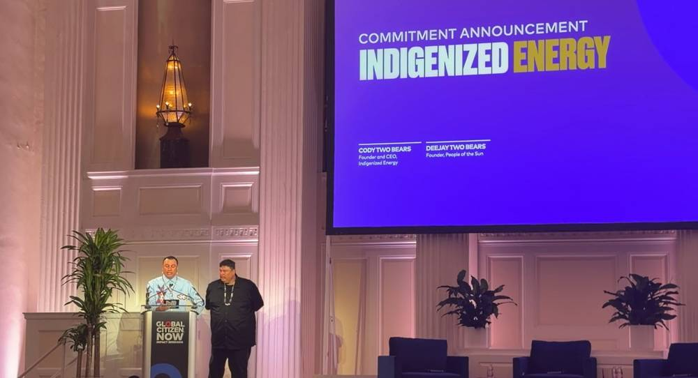

미국·캐나다 원주민 5만 가구에 태양광·배터리…원주민 비영리단체, 25억 달러 모금 나서

Indigenized Energy와 글로벌 시티즌 공동 캠페인, 2027년 첫 사업 목표…'공동체 소유' 에너지 강조
미국과 캐나다의 원주민 가구 최대 5만 곳에 태양광과 배터리 저장장치를 보급하는 대규모 모금 캠페인이 시작됐다. 원주민이 이끄는 비영리단체 Indigenized Energy와 국제 시민운동단체 글로벌 시티즌은 지난 12일 자선 기부와 임팩트 투자로 모두 25억 달러를 모으겠다고 밝혔다. 모은 돈은 에너지 설비뿐 아니라 현지 인력 교육과 기술 역량을 키우는 데에도 쓰이며, 첫 사업은 2027년 시작을 목표로 한다. 다만 지금까지 확보한 금액은 공개하지 않았다. 코디 투 베어스 Indigenized Energy 대표는 인공지능(AI)이 전력 수요를 끌어올리고 에너지 가격 불안이 커질수록 "공동체가 소유한 태양광과 배터리"의 가치가 더 커진다고 강조했다. 이 단체는 2017년 다코타 송유관 반대 운동(NoDAPL) 이후 세워져 부족 정부들과 함께 사업 자금 마련, 지역 역량 강화, 설비를 유지할 인력 양성을 해 왔다.
시민에너지 관점
송유관에 맞서던 공동체가 스스로 발전소 주인이 되겠다고 나선 것은 반대만으로는 지역의 미래를 지킬 수 없다는 깨달음에서 나왔다. 5만 가구라는 목표가 크게 들리지만, 설비를 지역 사람이 소유하고 지역 인력이 관리해야 수익과 일자리가 밖으로 새지 않는다는 원칙은 한국의 농어촌에도 그대로 들어맞는다. 한국에서도 송전선과 발전단지를 떠안는 지역이 '보상받는 곳'이 아니라 '소유하는 곳'이 되려면 출자 자금과 기술 교육을 함께 묶는 지원이 필요하다. 정부와 지자체는 햇빛소득마을을 설비 보조에서 그치지 말고 주민 운영 인력 양성까지 한 묶음으로 설계해야 한다.
출처: Tribal Business News 2026-11-14 Tribal Business News Staff 원문 보기
米国・カナダの先住民5万世帯に太陽光と蓄電池…先住民の非営利団体が25億ドルの募金へ
Indigenized Energyとグローバル・シチズンの共同キャンペーン、2027年に最初の事業を目指す…「共同体所有」のエネルギーを強調
米国とカナダの先住民世帯、最大5万か所に太陽光発電と蓄電池を普及させる大規模な募金キャンペーンが始まった。先住民が率いる非営利団体Indigenized Energyと国際市民運動団体グローバル・シチズンは12日、慈善寄付とインパクト投資で計25億ドルを集めると発表した。集めた資金はエネルギー設備だけでなく、現地の人材育成と技術力の向上にも充てられ、最初の事業は2027年の開始を目指す。ただ、これまでに確保した金額は明らかにしていない。Indigenized Energyのコーディ・トゥー・ベアーズ代表は、人工知能（AI）が電力需要を押し上げ、エネルギー価格の不安が強まるほど「共同体が所有する太陽光と蓄電池」の価値は高まると強調した。同団体は2017年のダコタ・アクセス・パイプライン反対運動（NoDAPL）を機に設立され、部族政府とともに事業資金の確保、地域の能力強化、設備を維持する人材の育成に取り組んできた。
市民エネルギーの視点
パイプラインに立ち向かった共同体が自ら発電所の持ち主になろうとするのは、反対だけでは地域の未来を守れないという気づきから生まれたものだ。5万世帯という目標は大きく聞こえるが、設備を地域の人が所有し地域の人材が管理してこそ収益と雇用が外に流れないという原則は、韓国の農漁村にもそのまま当てはまる。韓国でも送電線や発電団地を引き受ける地域が「補償を受ける場所」ではなく「所有する場所」になるには、出資資金と技術教育を一体にした支援が必要だ。政府と自治体は、太陽光所得村を設備補助で終わらせず、住民による運営人材の育成まで一つのパッケージとして設計すべきだ。
出典: Tribal Business News 2026-11-14 Tribal Business News Staff 原文を読む
为美国和加拿大5万户原住民家庭安装光伏和电池…原住民非营利组织启动25亿美元募资
Indigenized Energy与全球公民联合发起，目标2027年启动首批项目，强调“社区所有”的能源
一项为美国和加拿大最多5万户原住民家庭提供光伏发电和电池储能的大规模募资行动已经启动。由原住民领导的非营利组织Indigenized Energy与国际公民运动组织全球公民（Global Citizen）12日宣布，将通过慈善捐赠和影响力投资共筹集25亿美元。资金除用于能源设备外，还将用于培训当地人员和提升技术能力，首批项目目标在2027年启动。不过，双方没有公开目前已到位的金额。Indigenized Energy首席执行官科迪·图·贝尔斯强调，人工智能推高电力需求、能源价格不确定性加剧，使“社区所有的光伏和电池”更具价值。该组织成立于2017年反对达科他输油管道运动（NoDAPL）之后，一直与部落政府合作筹集项目资金、加强地方能力并培养维护设备的人才。
市民能源视角
曾经对抗输油管道的社区如今要亲自成为电站的主人，源于一个认识：单靠反对守护不了地方的未来。5万户的目标听起来很大，但只有让当地人拥有设备、由当地人员管理，收益和就业才不会外流，这一原则同样适用于韩国农渔村。在韩国，承担输电线和发电园区的地区要从“接受补偿的地方”变成“拥有资产的地方”，需要把出资资金和技术培训捆绑在一起的支持。政府和地方应把阳光收入村从单纯的设备补贴，扩展为包括培养居民运营人才在内的一揽子方案。
来源: Tribal Business News 2026-11-14 Tribal Business News Staff 查看原文
Indigenous nonprofit seeks $2.5 billion to bring solar and batteries to 50,000 homes in US and Canada
Joint campaign by Indigenized Energy and Global Citizen aims for first projects in 2027, stressing community-owned energy
A large fundraising campaign has been launched to bring solar power and battery storage to as many as 50,000 Indigenous households across the United States and Canada. Native-led nonprofit Indigenized Energy and international advocacy group Global Citizen said on the 12th that they aim to raise a total of $2.5 billion through philanthropy and impact investment. The money is to pay not only for energy systems but also for training local workers and building technical capacity, with the first projects targeted to start in 2027. The partners have not disclosed how much they have secured so far. Indigenized Energy CEO Cody Two Bears said that as AI pushes up electricity demand and energy prices grow more uncertain, solar and storage owned by communities become all the more valuable. Founded in 2017 in the wake of the NoDAPL pipeline protests, the group works with tribal nations to secure project funding, build local capacity and train the workers who keep the systems running.
Citizen Energy View
A community that once stood against a pipeline is now setting out to own its power plants, born of the realisation that opposition alone cannot secure a region's future. Fifty thousand homes is an ambitious goal, but the principle that profits and jobs stay local only when local people own the assets and local workers run them applies just as well to rural Korea. For Korean regions that host transmission lines and generation sites to become owners rather than mere recipients of compensation, support must bundle investment capital with technical training. Government and local authorities should design Haetbit income villages as a full package that includes training residents to operate them, not just subsidies for equipment.
Source: Tribal Business News 2026-11-14 Tribal Business News Staff Read the original